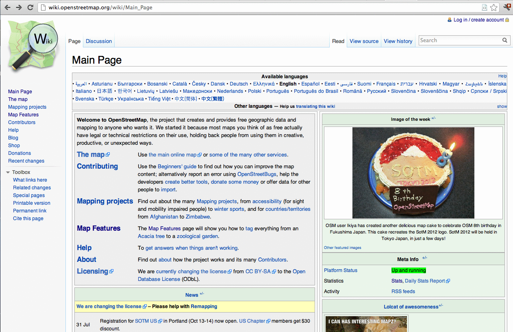
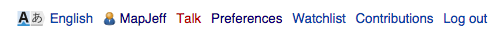
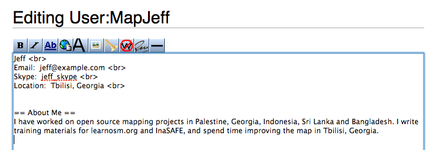
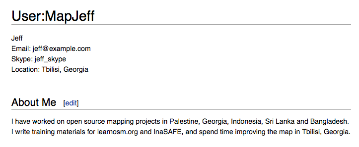
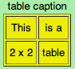
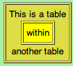
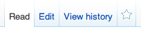

Module 6: Editing the OpenStreetMap Wiki¶
Learning Objectives
Make an account on the OpenStreetMap wiki
Understand conventions and rules in developing a wiki page
Edit the wiki
Upload files and images
Translate and revise wiki
OpenStreetMap is based around a community of mappers working together. Because of this it is necessary to have a way to communicate with each other, whether it be to organise social mapping events, to discuss different projects related to OSM or to create standards for mapping processes. The main avenue for mappers to do this is through the OSM wiki, a website where users can create different web pages about different topics and in different languages. To see the OSM wiki, visit http://wiki.openstreetmap.org
1. OSM wiki¶
A wiki is a website where any user can add pages and edit existing pages. It is based on the same principle as OSM. The only difference is that with OSM users are editing maps, while wiki users are editing text. The most famous wiki is Wikipedia (http://www.wikipedia.org), an online encyclopedia that covers almost every topic imaginable.
The OSM wiki contains information about everything related to OSM. When someone is working on a project that uses OSM, they create a wiki page so that other people can read about their project. The wiki contains help for users wanting to learn more about OSM, for common standards on how to make maps and on how to tag objects on the map, as well as many other things. You have already seen at least one of the OSM wiki pages, which describes all of the most common features that you can add to the map, and how they are commonly tagged. This is the Map Features page: http://wiki.openstreetmap.org/wiki/Map_Features
In this module we will learn how to add and edit pages on the OSM wiki. We will learn the guidelines for contributing, the special markup language for creating a wiki page, and helpful ways for improving the wiki, such as translating important pages.
2. Signing up¶
Go to http://wiki.openstreetmap.org to see the main wiki page. You’ll see a lot of things here, and many links to other pages on the wiki. In the left column are links to some of the main pages. At the top of the page are a list of all the languages in which you can view this page. If it’s available, you can switch the page to your language. Try exploring some of the links on the page to what kind of information is available on the wiki.
It is not necessary to have an account in order to view the OSM wiki, but you will need to create an account if you want to edit or add pages. Note that this is not the same as your OSM account. You must create a new account, although you can use the same name on the wiki as you did when signing up for OSM.
To create a new account, click on Create account in the upper right corner of the website. If you already have an account click Log in to sign in to the website.
Fill in the form with the username you want to create, your password twice, your email address, and your real name. In the CAPTCHA box at the top you need to type the words that are shown in the box. This is a security prevention to ensure that you are human, and not a computer.
Click Create your account.
You will be automatically logged in, and your username and other links will appear in the upper right corner of the website.
3. Editing¶
Let’s start out by editing our user page. Every user has a page on the wiki. These pages are commonly used to provide information about yourself, your location, for communication between users and for creating test pages and drafts.
This is a great place to start learning the basics of editing a wiki page.
Go to your user page by clicking on your username in the upper right corner. The user in our example is “MapJeff”. Yours will be the username you signed up with.
Right now the page is empty. Click on edit this page to add something to it.
We can type anything into the editor to add information to the page. For example, let’s add some basic information and a description. Add information about yourself. Here is an example:
When you have added some text, enter a summary of your changes in the box next to Summary and click Save Page. The page will look something like this:
This is great because we have successfully saved our text to the page, but it is no good because it not formatted in a good way. In order to make it look nice, we need to learn some of the basic wiki formatting techniques. Click Edit at the top of the page, and let’s make some more changes to our page.
If you understood the previous module on XML, you will remember that we used elements which have opening tags and closing tags. We will do something similar on the wiki, using special characters to surround the text we want to appear a certain way.
The wiki does not automatically put new lines in unless we ask it to, so we need to put the tag <br> at the end of each of our lines in the first section. This will cause a line break to occur.
Then, we want the words “About Me” to appear highlighted since it is the heading of a section. To do this we can surround it like this:
= = About Me = =
Now our code looks like this:
After we save it the page will look nicely formatted:
Practice formatting your text in different ways. A small hint: the buttons above the text box will automatically insert different types of formatting code into your text!
Once you have saved your page, it will be viewable by anyone on the internet. The following link goes to our demo page, but if you replace our username with yours, it will go to your user page.
4. Wiki formatting¶
In this section we will discuss many of the different ways you can format your information on a wiki page and the appropriate codes to use to create different elements.
It’s a good idea to practise before trying to create an official wiki page that you want others to see, so first let’s create a sub-page under your user page where you can play around and practise editing.
Create a new wiki page by typing in the link to the page that you want and then creating a new page. For now, let’s create a new subpage that we can use to practise our wiki editing. In your web browser go to the following address, replacing “MapJeff” with your own username: https://wiki.openstreetmap.org/wiki/User:MapJeff/testpage
This will take us to an empty page that we can edit.
Now let’s look at how to format our text. Use your test page to try out different formatting.
Simple formatting¶
Description |
Example wiki source |
Result |
|---|---|---|
Surrounding text with two apostrophes (’) will display the text in italic |
‘’italic text’’ |
italic text |
Surrounding text with three apostrophes (’) will display the text in bold |
‘’’bold text’’ |
bold text |
Surrounding text with five apostrophes (’) will display the text in bold italic |
‘’’’’bold and italic text’’’’’ |
|
Four dashes in a row will create a horizontal line. This should be used sparingly. |
_ _ _ _ |
Special formatting¶
Description |
Example wiki source |
Result |
|---|---|---|
The tags ‘<nowiki>’ and ‘</nowiki>’ disable the wiki-syntax in the enclosed text. |
‘’’bold text’’’ <nowiki>’’’bold text’’’</nowiki> |
bold text ‘’’bold text’’’ |
Surround your text with ‘<!– ‘, ‘–>’ and the enclosed text will not display on the wiki-page (a comment). |
Comment! <!–this is a comment which will not be shown–> |
Comment! |
Headings and subheadings¶
A section starts with a header consisting of a line beginning and ending with two or more consecutive equal signs (=). The number of equal signs indicates the nesting level of sections.
When you create sections and subsection headings in your wiki page, the page will automatically have a table of contents section created at the top of the page.
Example wiki source |
Result |
|---|---|
= = =Header 2= = = |
Header 2 (try this out!) |
= = = =Header 3= = = = |
Header 3 |
= = = = =Header 4= = = = = |
Header 4 |
Lists¶
It’s easy to create a bullet list. In order to make an item in a list, you simply need to use a star (*) as the first character on one or more consecutive lines.
To create an ordered list, simply use number signs(#) instead of stars(*). Create nested lists by using a combination of stars and number signs. Nested lists display as lists with different levels of indentation. When nesting lists you may mix bullet lists and numbered lists on each level.
Example wiki source |
Result |
|---|---|
* Item in a bullet list * Another item |
|
# Item in a numbered list # Another item |
|
* This list has
* bullets on the first level |
|
Links¶
Links within the OSM wiki are simple. Simply surround the name of the wiki page you want to link to with double brackets [[wiki-link]]. You could add different text for the link by adding a pipe symbol (|) and the text will appear as the link text. If you want a special language version of a wiki page, you should prefix the page name with the two-letter language code and a colon (:). For example, to link to the German version of a page, you would use [[de:wiki-link]].
If you want to link to an article on Wikipedia, prefix the name of the article with “wikipedia:”. For example, [[wikipedia:article-name]]. If you want to link to a wikipedia article in another language, you can add the language code like this: [[wikipedia:de:article-name]].
Finally, if you want to create an external link, simply type the URL and it will display as a link. If you want to change the link text, you can use one set of brackets to change the text which links to your URL [external-link link-text].
Example wiki source |
Result |
|---|---|
[[Map Features]] [[Map Features | different text but links to same]] |
|
[[wikipedia:OpenStreetMap]] [[wikipedia:OpenStreetMap | different text]] |
|
|
[http://fieldpapers.org | other text] |
Tables¶
Tables are probably the trickiest thing to create in a wiki, but easy once you understand how it works. First, you need to understand that a table is really a grid that has some number of rows and some number of columns, and one type of information is contained horizontally in rows and another type vertically in columns.
A basic table needs the following parts:
A line with the first two characters ‘{|’ indicating the begin of a table.
An optional line with the first two characters ‘|+’ for the caption of the table.
One or more table rows, beginning with ‘|-’ and usually no other content.
After each table row one or more lines with table cells and their text/content. A table cell has as the first character a pipe symbol (|) and the second character cannot be either plus (+) or minus (-) because these two are reserved for caption and table row respectively.
A line with the first two characters ‘|}’ indicating the end of a table.
It is good practise and increases readability to use a space as the second/third character, thus avoiding any ambiguity.
Example wiki source
{| align="center"
|+ table caption
|- align="center"
| This
| is a
|- align="center"
| 2 x 2
| table
|}
Result
Example wiki source
{| border="1"
|- align="center"
| This is a table
{| align="center"
|- align="center"
| within
|} another table
|}
Result
Play around with all these different techniques for formatting your wiki. To see an example of all of these things, take a look at the test page we created here: https://wiki.openstreetmap.org/wiki/User:MapJeff/testpage
Compare the wiki text to the way it is formatted when you are viewing it. Find more information on editing at http://wiki.openstreetmap.org/wiki/Help:Wiki-Editing.
5. Creating a new page¶
You can create any wiki page the same way that you have created your user page. However, before you run off creating hundreds of pages, it is important to understand a few guidelines for how to best contribute. Some key things to keep in mind are:
Before creating a page¶
Don’t duplicate. When you want to create a new wiki page, do a comprehensive search of the wiki to ensure that someone else hasn’t already created a page about the same topic. You can search for existing pages using the search box in the upper right.
If a page that you want to create already exists, but you think it could be better, you should improve it, instead of creating an entirely new page.
Choose a descriptive name, capitalise new words and don’t use spaces or dashes. The Map Features page for example, is named Map_Features, making the link: http://wiki.openstreetmap.org/wiki/Map_Features.
When structuring a page¶
Divide your page into sections and subsections.
Create an “Introduction” section at the top of the page to give a brief explanation of the page.
Format different parts of your pages as tables or lists, when appropriate.
When in doubt, look at other pages on the wiki for inspiration about how to format things. Remember that you can look at the code for any page by clicking on the edit tab and seeing how other users format their text.
6. Uploading files and images¶
To add or insert files or images on wiki pages, first we must upload the file itself to the wiki.
Uploading files¶
Go to https://wiki.openstreetmap.org and make sure you are logged in.
Click Upload file on the left side of the screen, under the Tools menu.
Click Choose File. Find the file that will be uploaded from your computer.
Optionally, you may enter a new filename for the file, a summary, and a licence.
After selecting the file, click Upload file at the bottom of the page. A page like this will appear, with your file shown:
This shows that your file or image uploaded successfully. The next step is to add it on to a wiki page.
Insert file / image in the wiki page¶
Go to the page where you wish to insert your file of image, and click Edit.
Copy the filename that you uploaded previously, for example: File:Mapping jakarta.JPG and File:Pemetaan dengan OSM.pdf.
Paste the filename(s) you have uploaded into the editing box, with two sets of brackets around it:
Click Save page.
In our example, the result looks like this:
7. Translating pages¶
One very useful thing that can be done on the wiki is to translate important pages into your language. As you’ve already seen, many wiki pages have links at the top where you can switch languages. However, this is only available for pages that have been translated, and that include a special tag at the top - {{Languages|page_name}}
When developing the OSM community in your country, it is very useful for key wiki pages to be translated into your language. Adding translated pages is easy, as we will see here.
The names of pages are always created in English, but different versions of the same page can be created by adding a language code into the URL. For example, the Map Features page is at http://wiki.openstreetmap.org/wiki/Map_Features
If you want the Spanish version of this page, it is available at http://wiki.openstreetmap.org/wiki/ES:Map_Features
If a page exists that you want to translate, simply visit the URL with your language code and a colon (:) preceding the page name. For example, if we wanted to translate this page into Indonesian, we would visit http://wiki.openstreetmap.org/wiki/ID:Map_Features.
Then click Edit to create this page.
The easiest way to add a translation is to go to a page in English, click Edit, and copy all of the wiki text to your Clipboard. Then edit the page in your own language, pasting in the original English text and translating it piece by piece. This will allow you to keep all of the original formatting and links correctly, but translate the English text into your own language.
8. Watching pages¶
You may want to keep an eye on pages that you have edited yourself, or that you have an interest in. To do this, you can add specific pages to your Watchlist which keeps a record of recent changes to pages, so that you will know when others have edited them.
To add a page to your watchlist, click on the star at the top of the page section:
Then, you can view your watchlist by clicking on Watchlist at the top of the page:
On the Watchlist page you choose to show changes to your watched pages within the past hours, days or since you started watching the page.